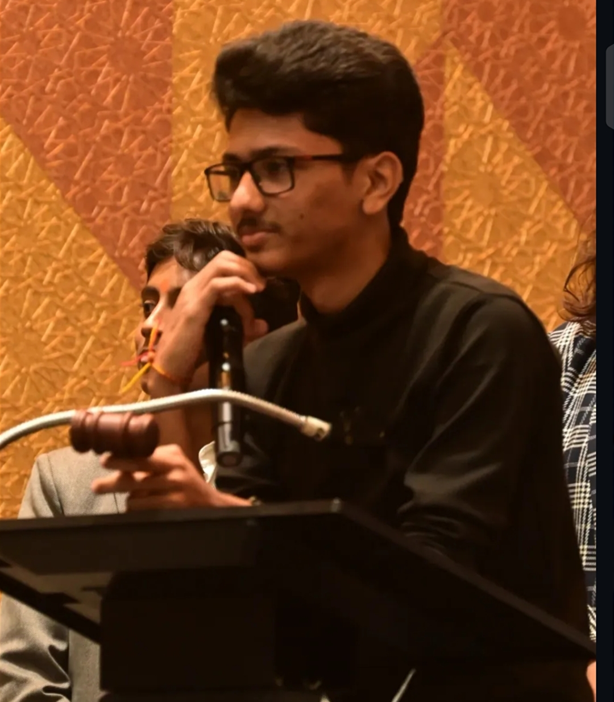
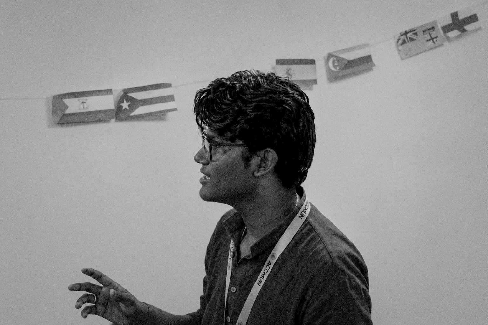

About the Committee
The UNSC bears primary responsibility for maintaining international peace and security. It investigates disputes, mediates conflicts, and may authorize sanctions or military intervention. The council’s unique structure, including its five permanent members, makes it the UN’s most high-stakes decision-making organ.
Agenda
Impact of the recent global conflicts upon international peace and security.
Background Guide
Executive Board

President: Aashish Sai Krishna
Meet Aashish Sai Krishna, a current graduate from Badruka College of Commerce and an alumnus of Avinash College of Commerce. He has been a prominent figure in the Hyderabad MUN circuit, having attended a wide range of conferences. He is renowned for his expertise primarily in the UN committees, having held roles both as a Delegate and an Executive Board member. In his free time, you can find him vibing to his favourite Evergreen Telugu and Hindi songs, or spending an extra hour lifting weights in the Gym. He is also a fan of movies such as Kalki 2898 AD, Sita Ramam and Arjun. Finally, he is enthusiastic about serving as part of the Executive Board for the conference and eagerly anticipates being a part of it.

Vice-President: Swastik Patnaik
Swastik Patnaik, a dynamic and enthusiastic student with a strong record in interschool competitions, including Model United Nations, debate, and academic quizzes, currently pursuing Chartered Accountancy. A confident speaker and thoughtful team player, known for leadership, a well-rounded personality, and active involvement in co-curricular activities, with a deep interest in international relations shaped by extensive MUN experience across Hyderabad. An avid follower of sports and strategy, a cricket fanatic and MS Dhoni admirer, a passionate Formula 1 fan who supports Ferrari while also adoring Max Verstappen, and a chess enthusiast, bringing creativity, curiosity, and a calm yet energetic presence to every task while thriving under pressure and working effectively with diverse teams.